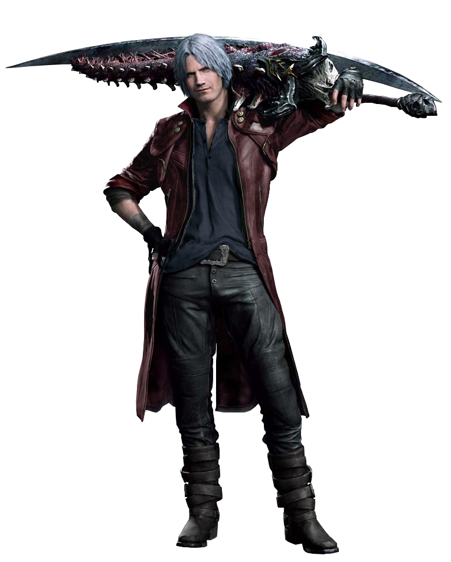
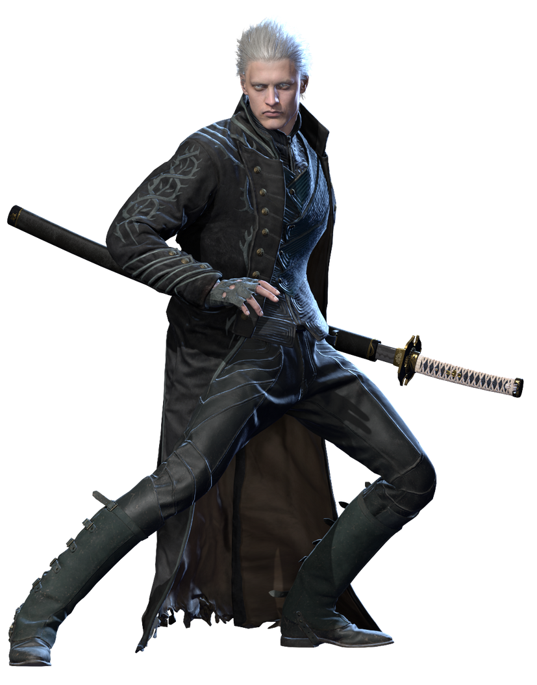
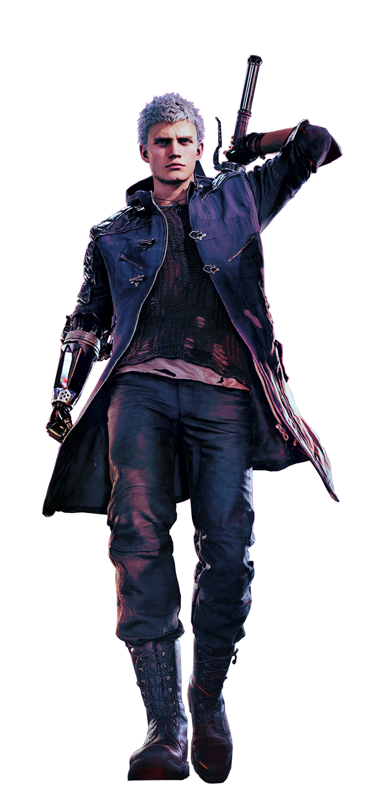
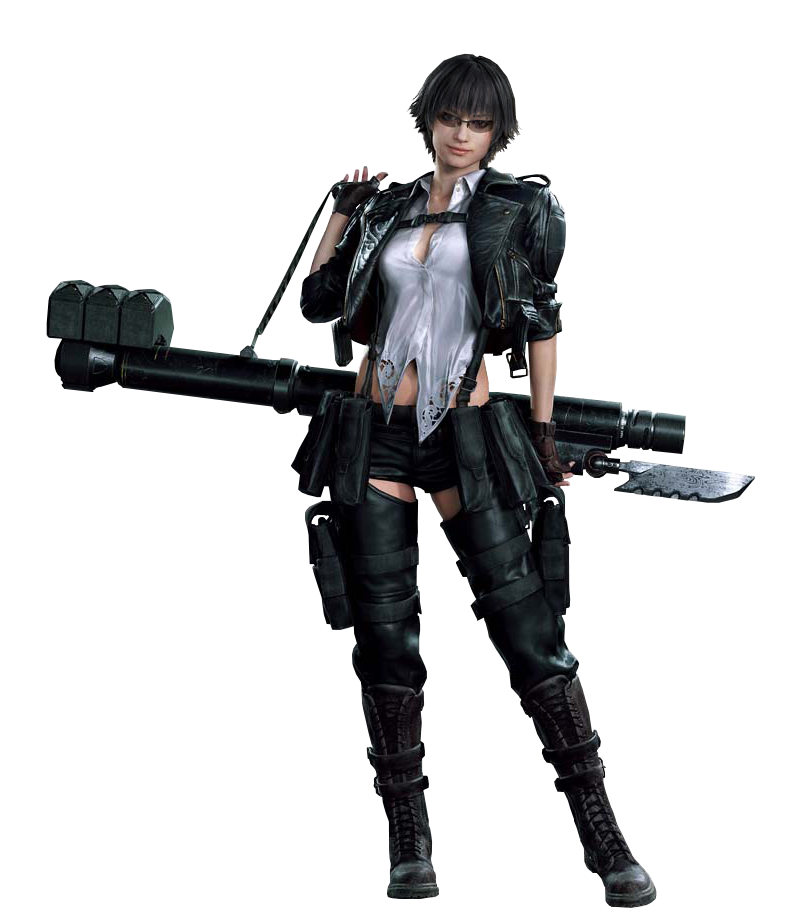
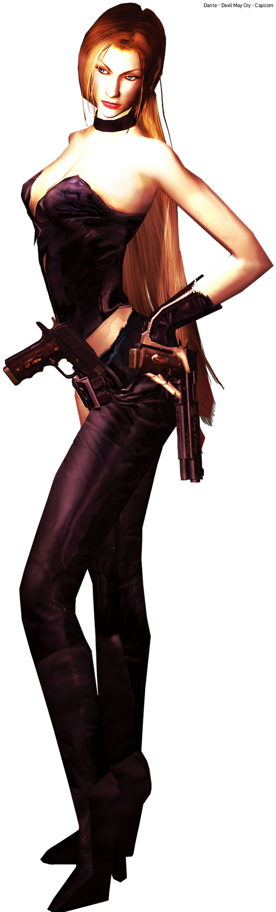
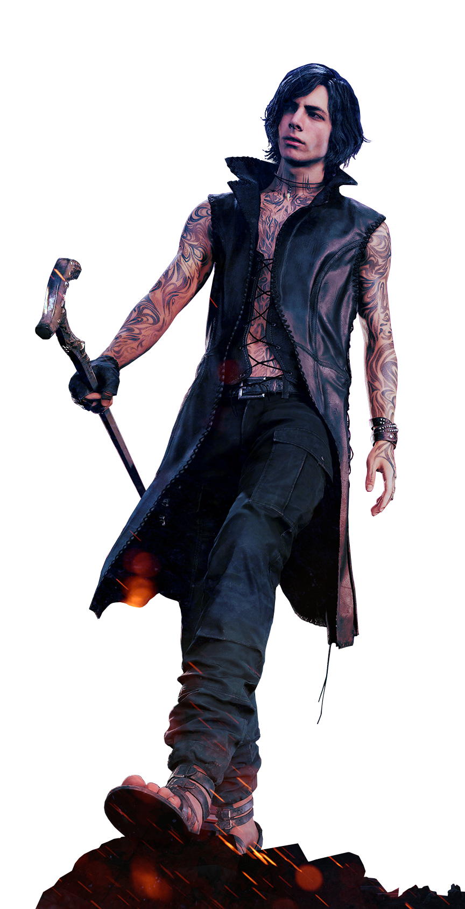

Dante
Filho do lendário Sparda, Dante é um poderoso caçador de demônios. Conhecido por sua personalidade divertida e estilo extravagante, utiliza espadas e pistolas para eliminar criaturas demoníacas.

Vergil
Irmão gêmeo de Dante, Vergil busca poder absoluto. Frio e calculista, utiliza a espada Yamato para derrotar seus inimigos com extrema velocidade e precisão.

Nero
Nero é um jovem caçador de demônios que possui o Devil Bringer, um braço demoníaco extremamente poderoso. Seu estilo de combate é agressivo e explosivo.

Lady
Uma habilidosa humana especializada em armas de fogo pesadas. Lady luta contra demônios mesmo sem possuir poderes demoníacos.

Trish
Criada pelo demônio Mundus, Trish possui aparência semelhante à mãe de Dante. Ela controla poderes elétricos e luta ao lado de Dante em diversas batalhas.

V
Um homem misterioso e frágil fisicamente que utiliza criaturas demoníacas para lutar. V possui um importante papel nos eventos de Devil May Cry 5.